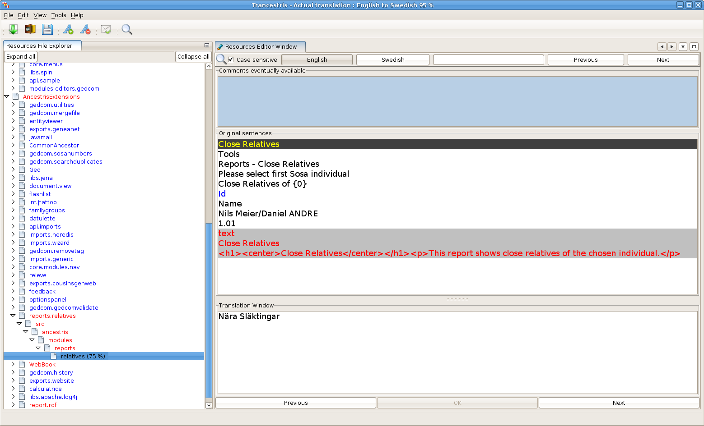
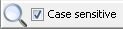
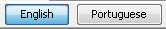
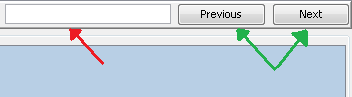
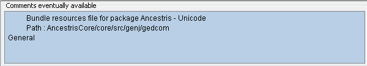
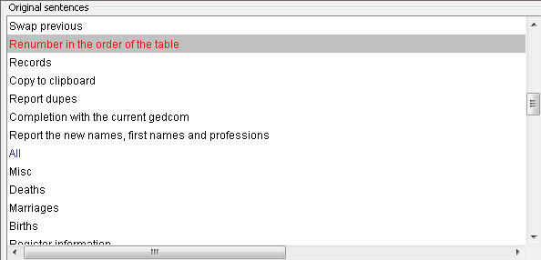
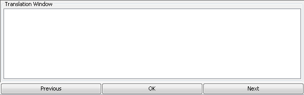

My First Words, Sentences, well, Translations!
So, let us start with the missing translations, or correcting the
existing ones. Take a look at the next picture, the Resources
Editor window:

We can distinguish here a small button bar, a search bar and
three major windows. Let's begin with the buttons bar, in the
form of table:
|
|
- allows to show/hide the Resources File Explorer
|
|
|
- allows to Show Opened Documents List
|
|
|
- allow to Scroll Documents Left/Right
|
Next, we have the search bar,
with two filtering possibilities. The first one,

allows us to choose between a Case Sensitive search or not, by
checking the box on the left side of the bar.

The second, by clicking one of these buttons, we can choose
between searching in the source text (the one we are translating
from) or the target text (the translated text).
After these selections, we should enter the text to search
for in the blank field (red arrow). It's also possible to
use the buttons (green arrows) to move through the search.

Both these bars are used mainly for navigation, not exactly
for translations. For those, we use the three windows below
the bars. The first one is exclusively for reading existing
comments and information. There can be also useful instructions
for translators. We don't do anything here!

In the second window, we find the original text, also not
editable. In "black" are the
strings already translated, in "blue"
the strings in witch the original text matches the translation,
and in "red, finally, the ones
to translate.

The last window, and the one that brought us here, is the
translation window. Here is where we input the text to be
used in the localized version of Ancestris.

At the bottom of this window, we have two buttons to navigate
between strings and a Confirmation button. This last
one is essential to save your translation. If you don't click
the "OK" button, all your work will be Discarded,
and the existing text is kept.
There are here other situations equally important to be taken
into account. You will find, in the original text, several
symbols, representing variables of the program, formatting
codes, etc. These symbols and expressions must not be altered
in any way, under penalty of provoking errors in the normal
functioning of Ancestris. See some examples below:
|
Create event {0} for {1}
|
The {xx} represent variables. Do not edit.
|
|
ancestris/modules/webbook/WebBook
|
These are hyperlinks. Do not edit.
|
|
<html>Check this box
to show this <br>message.</html>
|
Here we have HTML tags between < >.
Keep everything equal to the originals.
|
Always pay attention to the comments window (the first one,
with the blue background). Lots of these situations are mentioned
there.
As you can see, it's rather simple, just select the
"reds, by clicking the respective
line on the original text window, or using the navigation buttons
at the bottom. Once done, just position the cursor on the
translation window and... Translate! :-)
!Never forget to click the “OK” button!